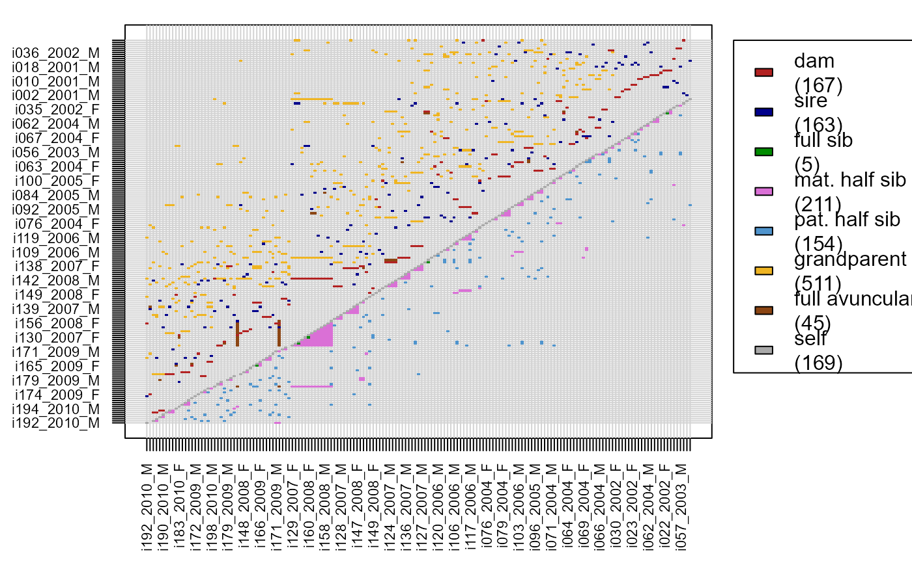

Matrix with Pairwise Relationships
GetRelM.RdGenerate a matrix or 3D array with all pairwise relationships from a pedigree or dataframe with pairs.
Usage
GetRelM(
Pedigree = NULL,
Pairs = NULL,
GenBack = 1,
patmat = FALSE,
directed = TRUE,
Return = "Matrix",
Pairs_suffix = "?"
)Arguments
- Pedigree
dataframe with columns id - dam - sire.
- Pairs
dataframe with columns ID1 - ID2 - Rel, e.g. as returned by
GetMaybeRel. CombiningPedigreeandPairsworks best if the relationships are coded as listed below.- GenBack
number of generations back to consider; 1 returns parent-offspring and sibling relationships, 2 also returns grand-parental, avuncular and first cousins.
- patmat
logical, distinguish between paternal versus maternal relative pairs? For avuncular pairs, the distinction is never made.
- directed
logical, distinguish between e.g. ID1=offspring, ID2=mother ('M') and ID1=mother, ID2=offspring ('O')? Defaults to TRUE; if FALSE both are are scored as 'PO', as are father-offspring pairs, and all grandparent– grand-offspring pairs are scored as 'GPO', and avuncular pairs as 'FNA' and 'HNA'. Not (currently) compatible with
patmat. WhenReturn='List', each pair is included twice (as ID1-ID2 & ID2-ID1)- Return
'Matrix', 'Array', or 'List'. 'Matrix' returns an N x N matrix with the closest relationship between each pair. 'Array' returns an N x N x R array with for each of the R considered relationships whether it exists between the pair (1) or not (0). See Details below. 'List' returns a list with for each of the R considered relationships a 2-column matrix with the IDs of the pairs having such a relationship. The size of the list (in Mb) is much smaller than for the matrix or array, and this is therefore the only format suitable for pedigrees with many thousands of individuals. If
Pairsis specified, the only possible return type is 'Matrix'.- Pairs_suffix
symbol added to the relationship abbreviations derived from
Pairs, when bothPedigreeandPairsare provided. Can be an empty string.
Value
If Return='Matrix', an N x N square matrix, with N equal to
the number of rows in Pedigree (after running
PedPolish) or the number of unique individuals in
Pairs. If Return='Array', an N x N x R array is returned,
with R, the number of different relationships, determined by GenBack
and patmat.
The following abbreviations are used within the returned Matrix, or
as names of the 3rd dimension in the Array or of the List:
- S
Self
- M
Mother
- P
Father
- MP
Mother or Father (
patmat=FALSE)- O
Offspring
- FS
Full sibling
- MHS
Maternal half-sibling
- PHS
Paternal half-sibling
- XHS
other half-sibling (hermaphrodites)
- HS
half-sibling (
patmat=FALSE)- MGM
Maternal grandmother
- MGF
Maternal grandfather
- PGM
Paternal grandmother
- PGF
Paternal grandfather
- GP
Grandparent (
patmat=FALSE)- GO
Grand-offspring
- FA
Full avuncular; maternal or paternal aunt or uncle.
- FN
Full nephew/niece
- HA
Half avuncular
- HN
Half nephew/niece
- DFC1
Double full first cousin
- FC1
Full first cousin
- U
Unrelated (or otherwise related)
- X
Unknown, e.g. when only
Pairsis provided and does not include this pair
Details
Double relationships are ignored when Return='Matrix', but
not when Return='Array'. For example, when A and B are both
mother-offspring and paternal siblings (A mated with her father to produce
B), only the mother-offspring relationship will be indicated when
Return='Matrix'.
Note that full siblings are the exception to this rule: in the Array
they will be indicated as 'FS' only, and not as 'MHS' or 'PHS'. Similarly,
full avuncular pairs are not indicated as 'HA'. Double half-avuncular
relationships are indicated as both FA and HA.
When Pairs is provided, GenBack and patmat are
ignored, and no check is performed if the abbreviations are compatible with
other functions.
See also
ComparePairs for comparing pairwise relationships
between two pedigrees; PlotRelPairs.
Examples
Rel.griffin <- GetRelM(Ped_griffin, directed=FALSE) # few categories
Rel.griffin <- GetRelM(Ped_griffin, patmat=TRUE, GenBack=2) # many cat.
table(as.vector(Rel.griffin))
#>
#> FA FC1 FN FS GO HA HN M MGF MGM MHS O P
#> 45 6 45 10 511 957 953 167 132 138 422 330 163
#> PGF PGM PHS S U
#> 120 121 308 200 35372
# turning matrix into vector first makes table() much faster
PlotRelPairs(Rel.griffin)
